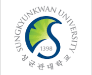

B.S. Student
Sungkyunkwan University
Completed 2nd Year
원전공은 인공지능융합전공, 복수전공은 소프트웨어학과이며 누적 평점은 4.33/4.5입니다. 원전공 평점은 4.44/4.5, 복수전공 평점은 4.5/4.5로 유지하고 있으며, 전공 기초를 탄탄히 다지면서 AI 관련 심화 학습과 연구 참여를 준비하고 있습니다.
Academic CV

Undergraduate Student · Prospective Research Intern
성균관대학교에서 인공지능융합전공을 원전공으로, 소프트웨어학과를 복수전공으로 이수하며 2학년 과정을 수료했습니다. 총 평점은 4.33/4.5이며, 원전공 평점은 4.44/4.5, 복수전공 평점은 4.5/4.5입니다. 학부 과정에서 쌓은 전공 역량을 바탕으로 연구실에서 실제 연구 과정을 경험하고 싶으며, 새로운 분야를 빠르게 학습하고 구현과 실험 결과를 차분하게 정리하는 태도를 강점으로 가지고 있습니다.
관심 분야와 연구실 지원 방향을 가장 먼저 보여주는 영역입니다. 예를 들어 인공지능, HCI, 컴퓨터비전, 시스템, 데이터사이언스처럼 교수님 연구 주제와 맞닿는 키워드를 2~3개 정도 분명하게 적는 편이 좋습니다. "왜 이 분야를 더 깊게 공부하고 싶은지"까지 짧게 연결하면 설득력이 높아집니다.
Sungkyunkwan University
Completed 2nd Year
원전공은 인공지능융합전공, 복수전공은 소프트웨어학과이며 누적 평점은 4.33/4.5입니다. 원전공 평점은 4.44/4.5, 복수전공 평점은 4.5/4.5로 유지하고 있으며, 전공 기초를 탄탄히 다지면서 AI 관련 심화 학습과 연구 참여를 준비하고 있습니다.
Selected Courses
Completed / In Progress
연구 적합성을 보여줄 수 있는 과목을 중심으로 정리했습니다.
수업 프로젝트 중 연구실 주제와 가장 가까운 것을 골라 문제 정의, 사용한 방법, 본인 기여, 결과를 2~3문장으로 적으세요.
논문 구현, 공개 데이터셋 분석, 모델 실험, 프로토타입 제작처럼 스스로 확장한 작업이 있다면 여기에 배치하는 편이 좋습니다.
연구를 위해 필요한 개발 경험이 있다면 도구를 나열하기보다 실제로 무엇을 만들고 검증했는지 중심으로 설명하세요.
교내 연구 프로그램, 학술 동아리, 튜터링, 해커톤, 성적 우수 장학 등 학업 태도를 보여주는 항목을 넣는 것이 적절합니다.
Add only your strongest evidence
지원하려는 연구실의 최근 주제와 본인의 관심사를 어떻게 연결할지 3~4문장으로 적어두면 교수님이 훨씬 빠르게 판단할 수 있습니다.
nawooh119@g.skku.edu